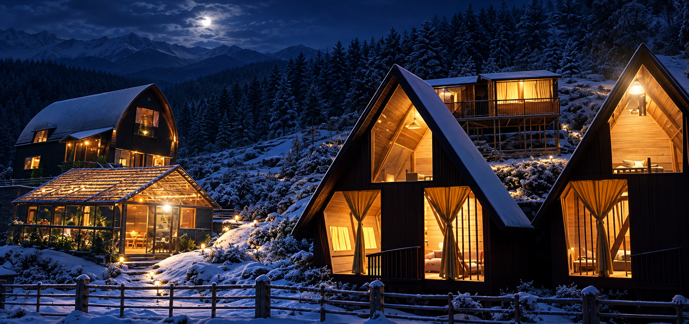

01 · Resorts
Arrival as a reveal.
Architecture, water, landscape and movement shape one continuous guest experience.

Bold Clay Studios brings architecture, fabrication and interior thinking together for distinctive cafés, resorts, farmhouses and alternative spaces.
The visual language takes a cue from the BCS mark: architectural lines, rich clay tones, quiet cream surfaces and a restrained touch of green from the landscape.

Mountain, forest and remote-site hospitality.

Material, light and circulation as one.
Vertical movement becomes a cinematic walk through hospitality, living and alternative spaces.
Architecture, water, landscape and movement shape one continuous guest experience.

Strong forms, warm textures and indoor–outdoor living for slower places.

Modular and alternative architecture adapted to difficult or remote settings.
Consultation, design, fabrication, fit-out and finishing can live under one direction — keeping the idea intact as it becomes real.
Read the terrain, climate, approach and atmosphere before imposing a form.
Use texture, light and craft to make the architecture feel lived-in, not staged.
Distinctive ideas carried through fabrication, interiors and finishing.
Architecture can be expressive without becoming loud. The aim is a warmer kind of premium — memorable forms, tactile materials, and spaces that belong to their setting.
See what we build ↗